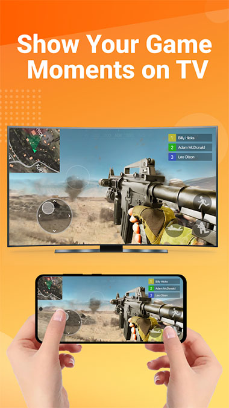

投屏的五个原理坑：为什么重启总管用、画质到底由谁决定
从连接状态机卡死到画质五环节连乘，把 mirroring 背后的技术设计逐条拆解——不是功能手册，是它为什么这样设计的底层逻辑。
你有没有想过一个问题：为什么投屏出问题时，"重启一下"永远是第一条、也是最灵的一条建议？
不是程序员偷懒想不出更聪明的解法，而是投屏链路里藏着一个你看不见的"状态机"——手机、同屏器、电视、路由器各自维护着一份连接状态表，长时间运行后这几份表可能对不上：手机以为还连着，电视的状态机已经卡在"半开"中间态，重连多少次都在死循环。重启的本质是把所有状态机清零，让链路从握手开始重新走一遍完整流程。这就是 mirroring官网 这类投屏工具能稳定工作的第一个前提——链路可靠性不依赖单点设备，而依赖整条链路的状态重置机制。
状态机卡死：为什么"半开态"比断了更麻烦
网络编程里有个经典的 "half-open connection" 问题：TCP 连接的一方崩了、另一方没收到 FIN 包，就永远卡在"等待对方确认关闭"的状态。投屏场景里这个问题被放大了——因为两端不只是传输层，还有应用层的投屏会话状态。样本里提到的"重启顺序"就是沿着依赖链从下往上清：先 Wi-Fi 栈，再应用层会话，再系统层网络，最后才动硬件电源。拔插销等一分钟不是仪式感，是让电视里的电容彻底放电、内存状态真的清零——有些电视的待机状态会保留上次会话的部分状态位，不拔插销重启等于没重启。

这也解释了为什么有线路线在稳定性上总是胜一筹：USB-C 转 HDMI 这条通道不经过网络层，状态机会简单很多——只有"插着"和"没插"两个明确状态，没有"路由器开隔离""同网段检测""Wi-Fi 5G/2.4G 漂移"这些中间变量。从下载拿到安装包之后，mirroring 在有线路线上的"边投边充"设计，其实也是同一个思路：用一条物理线同时承载数据和供电，减少任何可能引入状态不确定的环节。
画质是五个环节的乘法，不是加法
很多人觉得投屏画面糊，笼统归罪于"这个软件不行"——但 mirroring 的文档里把画质拆成了五环节连乘模型：视频源码率 × 播放器设置 × 连接方式 × 大屏分辨率匹配 × 显示模式。任一环为零，结果就是零；任一环打折，结果就是打折。
举个例子：你用 Wi-Fi 5G 投屏一个 4K HDR 片源，路由器后台同时有三台设备在下载，无线路线自动降质保流畅，码率掉到原来的三分之一，画面必然糊——这时候换软件没用，因为瓶颈不在应用层，而在无线传输链路的拥塞控制。反过来，用有线传输同一份片源，绕过所有网络拥塞环节，画质直接由源文件决定。mirroring 文档里反复强调有线路线的画质优势，本质上是在说：当你对画质敏感时，别让网络成为乘法项里的那个变量。
这里还有个容易被忽略的反直觉点：大屏端的"动态模糊""降噪"处理对投屏画面反而是负优化——这些算法是为电视信号设计的，信号来源是低码率广播流，需要插值补细节；但投屏来的画面本身已经是高码率的 PCM 数据，再插一层降噪等于把清晰画面抹成模糊的。关掉这些选项，画质可能反而跳上来。
镜像 vs 推送：采集模式决定了延迟天花板
mirroring 这类工具的核心设计选择之一是采用镜像模式——手机屏幕完整采集后实时传输到大屏。对比 DLNA 推送模式（大屏端直接拉流媒体，手机只做发送指令），镜像模式的优势是通用性：你投什么都能上大屏，相册、游戏、文档、微信聊天——不依赖应用本身适配投屏协议。
但镜像模式有一个结构性天花板：延迟永远不会为零。因为每帧画面都要经过"手机屏幕采集 → 编码 → 传输 → 大屏解码显示"这整条管线，而推送模式跳过了手机采集环节，直接走流媒体协议。mirroring 在无线路线上针对这个天花板做了优化：尽量压缩编码延迟、优先用局域网组播减少冲突、但本质上它没有跳出镜像模式的架构约束——如果你想玩竞技游戏，镜像模式的延迟就是硬伤，这时候反而该切有线路线或直接用推送模式。
取舍：什么场景它好用，什么场景别用
把上面三个原理串起来，mirroring 的设计取舍就很清晰了：
它好用的场景：
- 网课学习和健身跟练——长时间稳定投屏，有线路线边充边投，镜像模式天然支持互动环节（手机答题大屏同步）。样本里提到的"两米线距离+电视挂墙"是健康视距的标准配置。
- 家庭聚会翻照片——镜像模式让手机滑动直接体现在大屏，双指放大细节同步跟随，相册轮播功能在大屏上就是现成的背景图。
- 游戏展示和产品演示——需要操控的演示场景，镜像模式让手机操作与大屏画面完全同步，比提前录视频灵活得多。
它不好用的场景：
- 竞技类游戏——镜像模式的延迟天花板决定了它没法满足操作精度要求，这类场景应该直接用 HDMI 输出或专用游戏串流方案。
- 超高码率片源的极限画质追求——哪怕有线能绕过网络拥塞，USB-C 的带宽上限仍是有限的，真正的蓝光原盘播放还是该走原生播放器。
- 纯观看的被动场景——如果只是想在电视上看一部电影、不想在手机上操作，DLNA 推送模式比镜像省带宽也更省电。
还有一个常见误区：别把 mirroring 当路由器替代品。如果你的局域网本身就不稳定、或者开了设备隔离导致同屏器和手机搜不到彼此，换应用没用——瓶颈在基础设施层，得先把路由配置理顺。mirroring 能帮你把投屏链路的软件层状态管理好，但它管不了路由器的网络隔离策略。
最后的判断
mirroring 这类投屏工具的技术原理其实不复杂——状态机管理、画质环节拆解、镜像 vs 推送的架构选择，每一点背后都是一组取舍。它没有追求"万能"，而是在"通用性优先"这个前提下，尽可能把每个环节的状态不确定性降到最低。当你理解了这些取舍，重启为什么总管用、画质为什么不跟着软件走、有线路线为什么更稳——这些问题就都有了答案。
这些原理和使用场景的详细说明，在 mirroring 的资料库里都能找到，文档同步维护在三个仓库上，感兴趣的可以去 GitHub、Gitee 和 GitCode 上翻翻看。